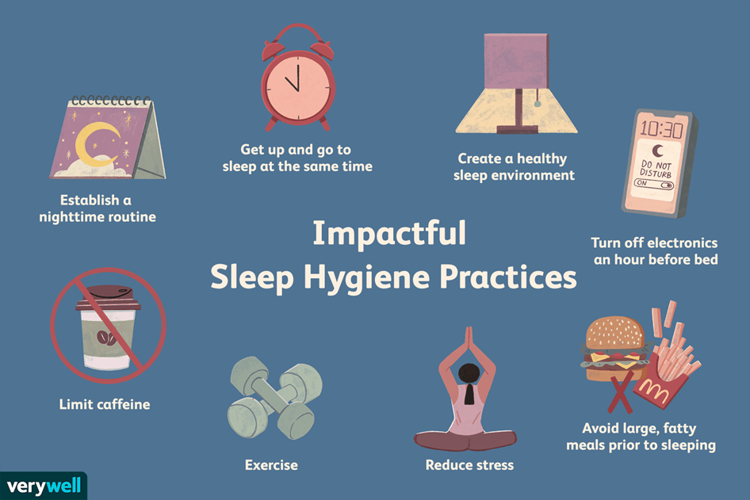

People's sleeping habits can vary widely based on individual preferences, lifestyles, and schedules. However, experts generally recommend adults aim for 7-9 hours of quality sleep each night to support overall health and well-being. Establishing a consistent sleep schedule, creating a relaxing bedtime routine, and ensuring your sleep environment is conducive to rest (such as a cool, dark, and quiet room) can all contribute to better sleep habits. If you're experiencing persistent sleep issues, it may be helpful to consult with a healthcare provider or sleep specialist for further guidance.
peoples sleepig habits
